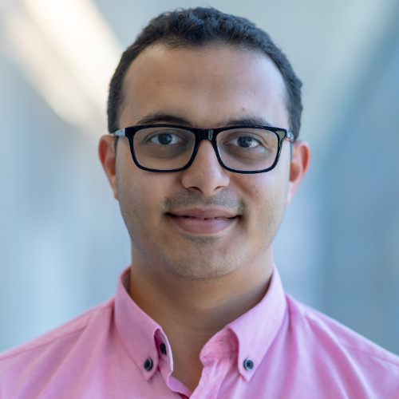
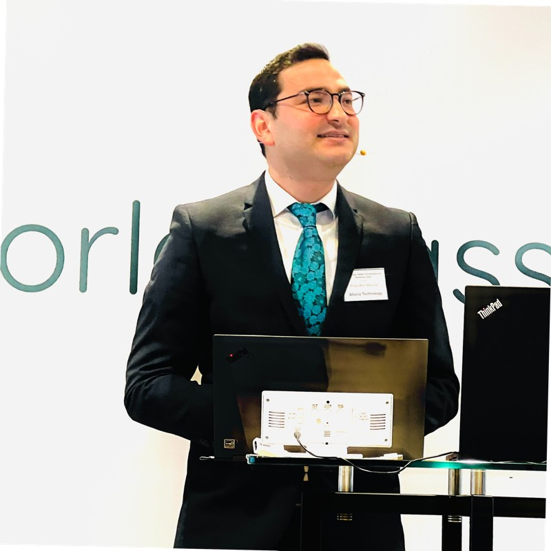

<div class="main">
    <div class="container">
      <h2>Speakers</h2>
      <div class="row">
        <div class="speaker col-12 col-md-6 col-lg-4" data-aos-duration="1000" data-aos="fade-down">
          
          <h3>Jim Schmiedeler</h3>
          <p>Professor at University of Notre Dame</p>
          <p>IROS CHAIR</p>
          <a href="https://www.linkedin.com/in/jim-schmiedeler-3135931/" target="_blank">LinkedIn</a>
        </div>
        <div class="speaker col-12 col-md-6 col-lg-4" data-aos-duration="1000" data-aos="fade-down">
          
          <h3>Anis Koubaa</h3>
          <p>Executive Director of Innovation Centre</p>
          <p>Director of Research and Initiative Center</p>
          <p>Aide to the Rector of Research Governance</p>
          <p>Full Professor in Computer Science at Prince Sultan University</p>
          <p>Senior Researcher at CISTER/INESC-TEC research group in Portugal</p>
          <p>Senior Fellow of Higher Education Academy (SFHEA)</p>
          <p>Chair of ACM Chapter in Saudi Arabia</p>
          <p>Director of Robotics and Internet of Things Unit at Prince Sultan University</p>
          <p>Founder of ROS Community in Tunisia</p>
          <a href="https://www.linkedin.com/in/aniskoubaa/" target="_blank">LinkedIn</a>
        </div>
        <div class="speaker col-12 col-md-6 col-lg-4" data-aos-duration="1000" data-aos="fade-down">
          
          <h3>Dr. Mohamed Abdelkader</h3>
          <p>Assistant Professor at Prince Sultan University</p>
          <p>Senior researcher, College of Computer & information Sciences</p>
          <a href="https://www.linkedin.com/in/mohamed-abdelkader-zahana/" target="_blank">LinkedIn</a>
        </div>
        <div class="speaker col-12 col-md-6 col-lg-4" data-aos-duration="1000" data-aos="fade-down">
          
          <h3>Oussama Chelly</h3>
          <p>ML Cloud Solution Architect | AWS Cloud Solution Architect</p>
          <p>Microsoft AI & IoT Lab EMEA</p>
          <a href="https://www.linkedin.com/in/oussamachelly/" target="_blank">LinkedIn</a>
        </div>
        <div class="speaker col-12 col-md-6 col-lg-4" data-aos-duration="1000" data-aos="fade-down">
          
          <h3>Firas Ben Hassan</h3>
          <p>Deputy Head of Data Science Services</p>
          <p>Artificial Intelligence Speaker</p>
          <p>Artificial Intelligence Guest Lecturer</p>
          <p>Mentor - Entrepreneur (Data, Data and Data)</p>
          <a href="https://www.linkedin.com/in/firas-ben-hassan-22bab3101/" target="_blank">LinkedIn</a>
        </div>
      </div>
    </div>
  </div>